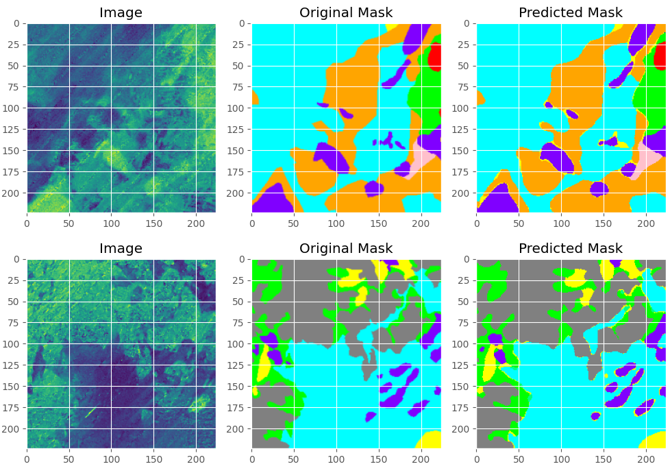
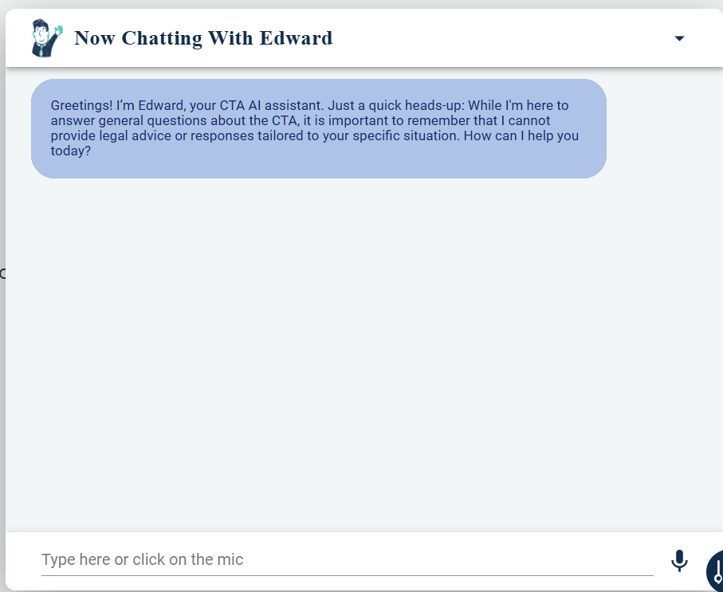
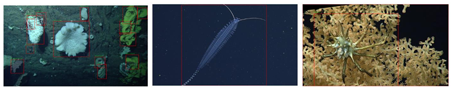
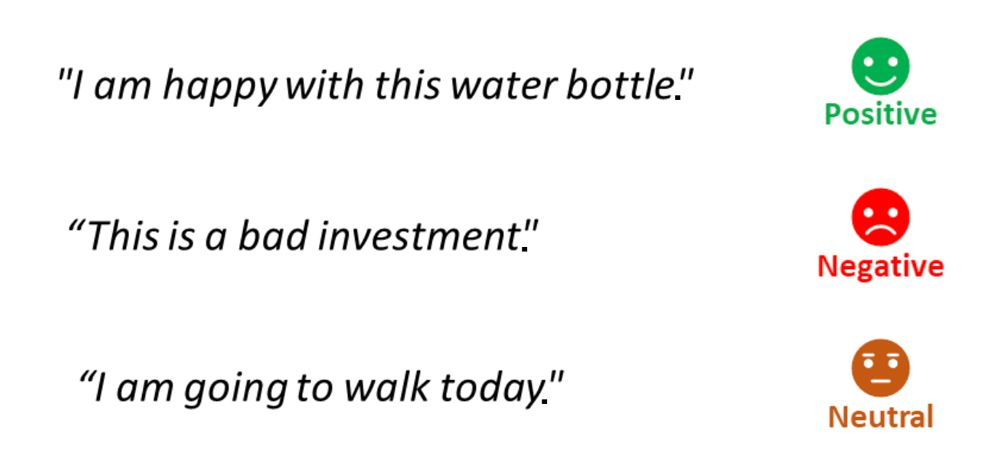

My Projects
Seafloor Segmentation using Deep Learning: U-Net for Sediment Type Classification

This project focuses on automated segmentation of the seafloor using deep learning techniques, specifically employing a U-Net model to classify different marine habitats based on side-scan sonar image data. The dataset consists of backscatter and bathymetry data collected from NOAA in Nahant, NH, which was patchified into smaller image tiles to create a structured dataset for training. The primary objective is to train a model that can accurately segment various seafloor features, such as sand, coral, and rocks, and generalize this approach to all underwater environments, enabling broader applications in marine research.
The segmentation model follows the U-Net architecture, which is widely used for semantic segmentation tasks due to its encoder-decoder structure. The model is designed with three input channels (RGB) and 17 output classes, representing different types of seafloor habitats. The training process is optimized using mini-batch gradient descent, and the dataset is split into 85% training and 15% testing to ensure robust model performance. Images are resized to 224x224 pixels, and data augmentation techniques, such as rotation, flipping, and contrast adjustments, are applied to improve generalization.
The model is trained using the Adam optimizer with a learning rate of 0.0001, a batch size of 32, and 50 epochs. Performance evaluation includes standard segmentation metrics such as Intersection over Union (IoU), Dice Coefficient, and Pixel Accuracy. The results indicate that the model successfully segments different seafloor textures and structures. Visualization of segmentation masks compared to ground truth labels provides insight into model accuracy and areas for potential improvement.
This segmentation system has various real-world applications, including marine conservation, habitat mapping, climate research, and autonomous underwater vehicle (AUV) navigation This project was a culmination of a semester-long research project in the DeepREAL lab at the University of Delaware. A paper published from the same lab in the same domain “SeafloorGenAI: A Large-scale Vision-Language Dataset for Seafloor Geological Survey.” was later accepted by NeurIPS 2024.
AI-Powered Customer Service Chatbot Development & Deployment with NLP and AWS

This project involved the end-to-end development, deployment, and optimization of an AI-driven customer service chatbot designed to enhance user interactions across multiple platforms. Built using Python and AWS, the chatbot was integrated into the company’s web frontend and Slack for both external customer engagement and internal automation.
To improve chatbot intelligence, NLP pipelines were implemented for intent recognition, response generation, and sentiment analysis, allowing for more dynamic and context-aware interactions. Performance was further optimized through fine-tuned Large Language Models (LLMs) and retrieval-augmented generation (RAG), ensuring accurate, relevant, and efficient responses.
This AI-powered chatbot successfully streamlined customer support workflows, reduced response times, and improved user engagement, demonstrating the practical application of machine learning, cloud-based AI deployment, and automation in business communication.
Scaling Performance Evaluation on
FathomNet: Finetuning a Faster R-CNN model on Marine Image Data

This project evaluates the scalability of Faster R-CNN for the object detection task on the FathomNet dataset, focusing on the impact of dataset size and image resolution on model performance and computational efficiency. The classification task involved detecting and classifying four ecologically significant marine species—sponges, corals, fishes, and crinoids—along with a fifth category for non-target objects or empty scenes. Challenges such as class imbalance and noise in the dataset were addressed through extensive augmentation techniques, enhancing the model’s ability to learn robust features.
Scaling was examined in terms of dataset size (1K, 5K, and 10K images) and image resolution (480x270, 960x540, and 1920x1080). Results showed that increasing dataset size significantly improved accuracy (mAP) only at larger scales, with diminishing returns observed for smaller datasets due to limited diversity. Higher image resolutions enhanced accuracy, especially for the 10K dataset, by capturing finer details, but led to increased GPU memory usage. Training time scaled linearly with dataset size but was unaffected by resolution, demonstrating predictable computational costs as the dataset grew. Inference time remained constant across all configurations, highlighting Faster R-CNN’s suitability for real-time applications. These findings underline the importance of balancing performance gains with resource constraints, offering insights into the trade-offs necessary for deploying scalable machine learning models in ecological monitoring. Future work will explore larger datasets, alternative architectures, and class scaling to improve performance and efficiency further.
Sentiment Analysis on Twitter Data using BERT

This project applies BERT (Bidirectional Encoder Representations from Transformers) to sentiment analysis on Twitter data, classifying tweets into positive, negative, or neutral sentiments. The dataset consists of labeled tweets stored in a CSV file and accessed via Google Colab. The primary objective is to leverage pre-trained transformer models to improve accuracy in analyzing short, informal social media text.
The dataset is first loaded and preprocessed by converting text into BERT-compatible tokenized sequences. The labels are mapped to integers, and exploratory data analysis (EDA) is conducted using Seaborn and Matplotlib to visualize sentiment distribution. The model architecture is based on pre-trained BERT (bert-base-uncased), which is fine-tuned using Cross-Entropy Loss for multi-class classification. The model training is monitored over 50 epochs, and the best-performing model is saved for evaluation.
After training, the model achieves a validation accuracy of ~94%, demonstrating strong performance in distinguishing between positive, negative, and neutral tweets. This has applications in tracking sentiment trends on brands, politics, and global events, automating sentiment classification in product reviews and support tickets, and understanding shifts in public perception and sentiment over time.
About Me
Outside of coding and machine learning, I enjoy outdoor activities, fitness, and exploring new technologies...
I'm passionate about AI, but I also love discussing philosophy, playing music, and traveling to new places.